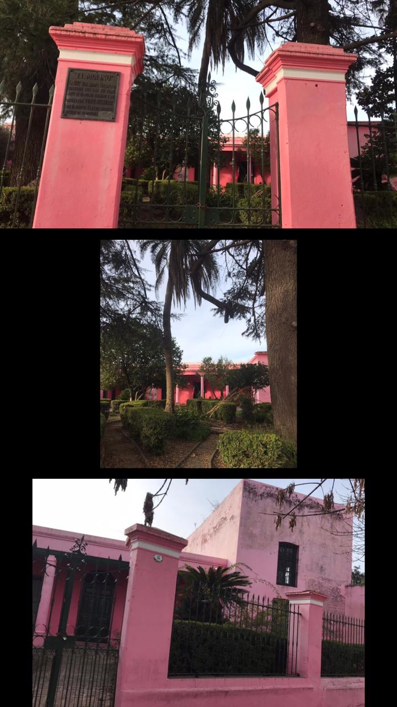

El 8 de agosto de 1870 Andrés Vaccarezza, llegado de Génova en 1848, adquirió un campo en el partido de Chivilcoy, creó en el una colonia agrícola e industrial, estableciendo a ese efecto un molino harinero que motivó el asentamiento de los primeros pobladores del lugar. Hacia 1872 se construye la casa del fundador en la actual esquina delimitada por las calles Av. Vaccarezza y Belgrano.
A partir de 1877 se inaugura el ramal Chivilcoy-Bragado del Ferrocarril Oeste creando la Estación Andrés Vaccarezza. Finalmente, el 27 de Octubre de ese mismo año se da lugar a la fundación del pueblo.